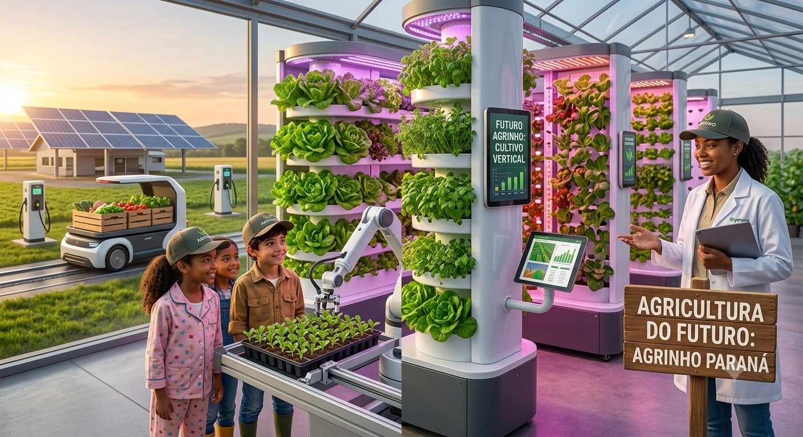

Sustentabilidade
O sistema utiliza placas solares para captar a energia do Sol, reduzindo o consumo de energia elétrica e diminuindo os impactos ambientais.
Nosso projeto apresenta um sistema de aquecimento utilizando energia solar, conceitos de Óptica, Robótica e Programação para tornar a piscina mais eficiente, econômica e sustentável.
Conhecer o ProjetoO sistema utiliza placas solares para captar a energia do Sol, reduzindo o consumo de energia elétrica e diminuindo os impactos ambientais.
O aquecimento solar reduz significativamente os gastos com eletricidade, aproveitando uma fonte de energia limpa, gratuita e renovável.
Além do conforto térmico para os usuários da piscina, o projeto incentiva práticas sustentáveis e a conscientização ambiental.
As placas coletoras possuem superfícies escuras porque absorvem uma quantidade maior da radiação solar, transformando a luz em calor para aquecer a água da piscina.
O vidro das placas permite a passagem da luz por refração, enquanto reduz perdas por reflexão, aumentando a eficiência do sistema de aquecimento.
O Disco de Newton demonstra que a luz branca é formada por diversas cores. Da mesma forma, materiais escuros absorvem mais energia luminosa do que materiais claros, tornando as placas solares mais eficientes.
Sensores de temperatura instalados na piscina monitoram constantemente a água. Essas informações são enviadas para um controlador eletrônico que analisa quando o aquecimento deve ser ativado ou desligado.
Bombas de circulação e válvulas automáticas funcionam como atuadores, movimentando a água pelos coletores solares quando existe necessidade de aumentar a temperatura.
Um microcontrolador como Arduino pode receber os dados dos sensores, interpretar as informações e controlar todo o sistema automaticamente.
24 °C
Clique no botão para ativar o sistema de aquecimento solar.
O projeto foi desenvolvido pensando na inclusão de todos os usuários, utilizando boas práticas de acessibilidade digital.
A união entre energia solar, programação e automação cria uma solução moderna para reduzir impactos ambientais e melhorar o aproveitamento dos recursos naturais.
O projeto incentiva estudantes e comunidade a compreenderem como a ciência pode solucionar problemas reais utilizando sustentabilidade e inovação.
Sistemas inteligentes de aquecimento podem ser aplicados em escolas, clubes e espaços públicos, promovendo economia e responsabilidade ambiental.
No futuro, coletores solares poderão utilizar novos materiais capazes de captar mais radiação e aumentar a eficiência energética do aquecimento.
Sensores conectados à inteligência artificial poderão analisar clima, temperatura e consumo para ajustar o funcionamento automaticamente.
